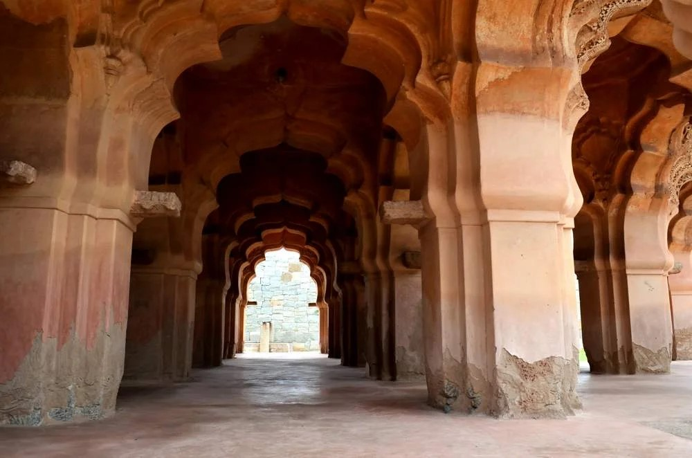

Lotus Mahal, also known as Kamal Mahal or Chitrangi Mahal, is a captivating architectural marvel situated within the Zenana Enclosure of Hampi, Karnataka, India. This unique structure serves as a testament to the eclectic taste and cultural synthesis of the Vijayanagara Empire, flourishing during the 14th to 16th centuries.
Architectural Fusion
Lotus Mahal's design is a perfect blend of Hindu and Islamic architectural styles, showcasing the empire's inclusive artistic vision. The elegant domed structure, resembling a lotus bud, incorporates arches, balconies, and other elements in a harmonious manner, creating a visually stunning and culturally rich masterpiece.
Purpose and Function
While the exact purpose of Lotus Mahal remains uncertain, it is widely believed to have functioned as a recreational palace for the women of the royal family within the fortified Zenana Enclosure. The name "Lotus Mahal" may be inspired by the lotus-like shape of its dome, enhancing its aesthetic allure.

Conclusion
Lotus Mahal continues to be a cherished destination for history enthusiasts and tourists, offering a glimpse into the past and the vibrant history of the Vijayanagara Empire. Its unique architectural fusion, functional design, and cultural significance make it a must-visit site for those seeking to appreciate the rich heritage of Karnataka.